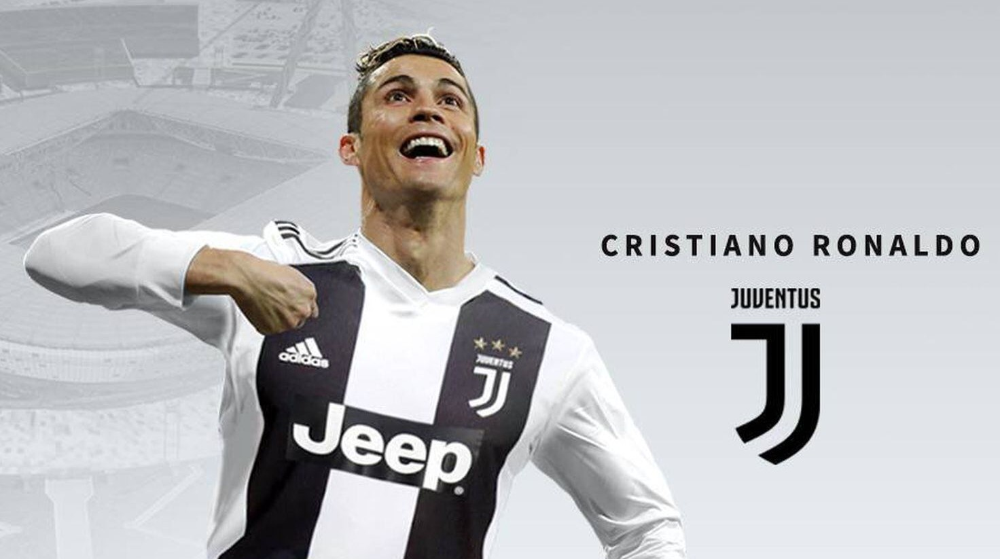

Manchester United
Ronaldo 2003 nyarán 12 millió fontért a "vörös ördögökhöz", vagyis a Manchester Unitedhez igazolt.Eredetileg a 28-as mezt kapta volna,de mivel Beckham távozott,ezért a 7-es lett az övé. Augusztus 16-án a Bolton ellen játszotta első tétmeccsét. A 2008-as év volt a legsikeresebb, január 12-én egy Newcastle elleni bajnokin megszerezte első mesterhármasát. December 2-án pedig átvehette első Aranylabdáját.A 2007/08-as kiírás végén ő lett az angol liga gólkirálya és legjobb játékosa,valamint megnyerte az európai Aranycipőt.A csapattal pedig elhódította az angol-szuperkupát,a bajnoki címet és még a Bajnokok Ligáját is.

Real Madrid
2009. július 26-án hozták nyilvánosságra, hogy 94 milló euróért a Real Madridban folytatja. Először a 9-es mezt kapta meg, a következő szezonban már Raúl távozása miatt övé lett a 7-es mez. Pályafutása során itt töltötte a legtöbb időt és itt érte el legnagyob sikereit, pályafutásának csúcsát. Számos egyéni címet nyert el és a csapattal is rengeteg trófeát zsebelhetett be. 2017-re már 5-szörös Aranylabdásnak mondhatta magát. A klubcsapatok legnagyobb küzdelmében, a Bajnokok Ligájában 4-szer emelhette a magasba a trófeát. Az itteni karrierjét végül 438 meccsel és 450 góllal zárta. Ezzel a királyi gárda történetének legeredményesebb játékosaként távozott.

Juventus
2018 nyarán mintegy 117 millió euróért lett a torinói klub játékosa. Ez volt az első alkalom, hogy 30 év feletti játékosért ilyen magas összeget fizettek, és a legtöbb, melyet egy olasz klub adott ki érte. Miután aláírt a torinóiakhoz, távozása indokaként az új kihívás szükségességét említette. Augusztus 18-án a Chievo ellen mutatkozott be. Az első két szezonját 2 bajnoki címmel és 1 olasz szuperkupával zárta. Utolsó évében megszerezte a 100. gólját is a Juventus színeiben, valamint gólkirályi címet is ünnepelhetett. Egyszersmind az első a labdarúgás történetében, aki az angol, a spanyol és az olasz bajnokságban is gólkirály tudott lenni. 2021 augusztusában jelentette be távozását.

Ugrás az oldal tetejére!